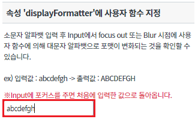
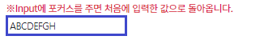
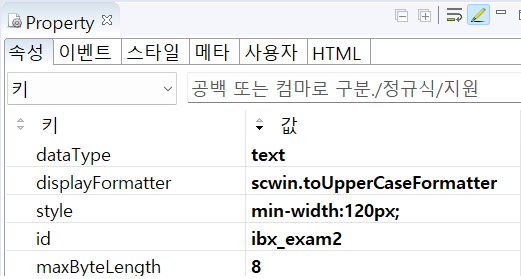
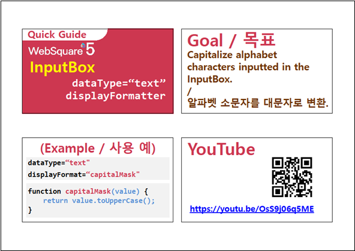

displayFormatter 속성에 사용자 함수를 지정하는 예제입니다. displayFormatter 속성으로 함수명을 지정하고 스크립트에서 해당 함수를 별도로 정의해야 합니다. 이 기능은 아래의 속성으로 사용할 수 있습니다. - dataType : Input의 dataType을 명시 - displayFormatter : 스크립트에서 선언한 함수명 기재
displayFormatter는 displayFormat과 동시적용이 불가합니다.
속성 'displayFormatter'에 사용자 함수 지정
Input에 아래 이미지와 같이 소문자 8자리를 입력합니다.
[브라우저(Chrome) 실행 예시]

입력 후 Input에서 focus out 또는 Blur 시점에 값이 대문자로 변화하는 것을 확인할 수 있습니다.
[브라우저(Chrome) 실행 예시]

STEP1. Input의 속성을 정의합니다.
[필수] dataType // [default: text, number, float, date, time, bigDecimal,euro] Input 컴포넌트 value의 dataType을 명시한다. 해당 값은 엔진에서 제공하는 displayFormat 등의 속성에서 참조한다.
[필수] displayFormatter //컴포넌트의 value를 포맷하는 함수 명.
해당 함수는 엔진에서 파라미터로 넘겨준 value에 대해 포매팅을 수행한 후, 화면에 표현할 최종 값을 반환함.
그림 1.웹스퀘어5 SP5 스튜디오의 Property View(속성창) 예시

[소스 코드 예시]
<!-- input 의 소스 본문 예시 --> <w2:Input dataType="text" displayFormatter="scwin.toUpperCaseFormatter" id="ibx_exam2"> <!-- 중략 --> </w2:Input>
STEP2. 핸들러 함수 scwin.toUpperCaseFormatter를 정의합니다.
/** * 영역 [속성 'displayFormatter'에 Input 입력값을 소문자에서 대문자로 바꿔주는 함수 지정]의 * 입력 [ibx_exam2]의 displayFormatter 함수 */ scwin.toUpperCaseFormatter = function (value) { return value.toUpperCase(); };
dataType
displayFormatter
[웹스퀘어5 SP5 개발 가이드] Input
링크 : https://docs1.inswave.com/sp5_user_guide/8df43d1f59fab704#3f78e914466d2d7a
[웹스퀘어5 SP5 개발 가이드] Input 대문자 변환
링크 : https://docs1.inswave.com/sp5_user_guide/8df43d1f59fab704#922cdb8c43a1c6c3
Input 대문자 변환
링크 : https://youtu.be/OsS9j06q5ME
